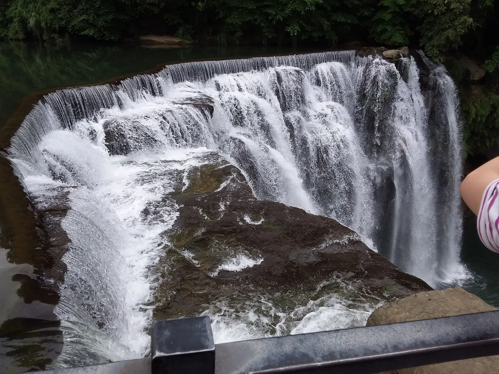

뭐가 특별한데?
스펀폭포는 기륭강 본류가 넓은 암반 턱을 한꺼번에 넘어가며 떨어집니다. 그래서 높은 한 줄기 폭포보다 가로로 넓게 펼쳐지는 흰 물의 벽이 핵심입니다.
폭포 아래 깊은 소에서 물안개가 크게 올라오고, 햇빛 방향이 맞으면 그 안에 무지개가 생깁니다. 신베이시 관광청이 이곳을 ‘Taiwan's Niagara Falls’라고 부르는 이유도 이 넓은 파노라마와 물량 때문입니다.

十分瀑布 · SHIFEN WATERFALL
높이보다 폭과 물량으로 보는 폭포. 복잡하게 공부하기보다, 왜 이 장면이 특별한지만 알고 가면 충분합니다.
스펀폭포는 기륭강 본류가 넓은 암반 턱을 한꺼번에 넘어가며 떨어집니다. 그래서 높은 한 줄기 폭포보다 가로로 넓게 펼쳐지는 흰 물의 벽이 핵심입니다.
폭포 아래 깊은 소에서 물안개가 크게 올라오고, 햇빛 방향이 맞으면 그 안에 무지개가 생깁니다. 신베이시 관광청이 이곳을 ‘Taiwan's Niagara Falls’라고 부르는 이유도 이 넓은 파노라마와 물량 때문입니다.
여러 폭포와 깊은 계곡, 숲을 걸으며 경관 전체를 보는 쪽에 가깝습니다.
큰 강물이 넓게 떨어지는 정면 파노라마와 물소리, 물안개를 한 번에 느끼는 폭포입니다.
괜찮습니다. 북부 대만의 겨울은 완전한 건기가 아니고, 스펀은 작은 계류가 아니라 기륭강 본류의 폭포라 2월 방문 자체가 나쁜 선택은 아닙니다.
다만 그날 실제 수량은 직전 며칠의 비에 따라 달라집니다. 가장 좋은 그림은 ‘며칠 비가 온 뒤 당일 맑음’. 햇빛이 나면 물안개 속 무지개도 기대할 수 있습니다.
우리 일정에서는 40–50분 정도면 충분합니다. 오래 공부할 곳이라기보다, 제대로 한 번 보고 스펀 옛거리로 넘어가는 곳입니다.
신베이시 공식 안내 기준 스펀폭포공원은 10월–5월 09:00–17:00 운영, 마지막 입장은 16:30입니다. 우리 13시 전후 방문에는 시간 여유가 충분합니다.
사진: Yue gowua YT · CC BY-SA 4.0 · Wikimedia Commons
정보 확인: 2026-08-23